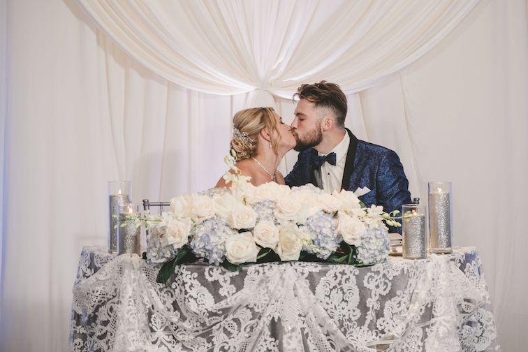
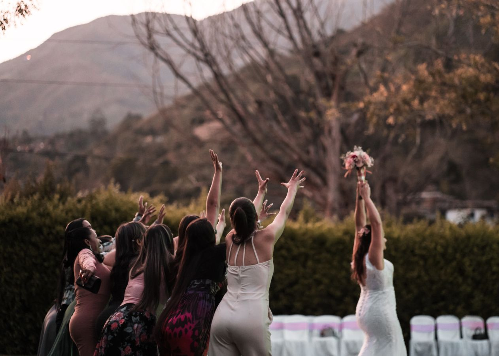

About the Photographer
With over 2 years of experience capturing weddings, portraits, and nature's beauty, I turn everyday scenes into extraordinary visuals. Let me help you tell your story through my lens.
Featured Works

More Galleries
Wedding Moments


Studio Portraits
Testimonials
“Jong captured our wedding in such a magical way — every photo feels like a moment frozen in time. Highly recommended!”
– Arief & Dita“I needed professional headshots for my portfolio. Jong was efficient, kind, and made me feel so confident in front of the camera.”
– Rina M.Get in Touch
üìß Email: jongsyahtech@gmail.com
Visit my Fiverr